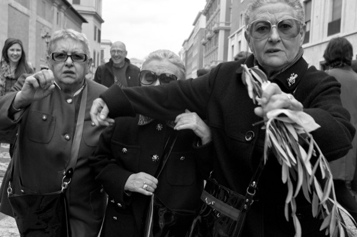

Two Sides to a Story
Side One: My darling sister Elizabetta, our mutual friend Giusepina and I—I’m Maria, named after Our Holy Mother the Virgin Maria and my own mother Maria Elena Vittalini—had woken up early on Palm Sunday to see Our Father Pope Benedict XVI. Anyone can tell to see us that we three have been together for most of our lives, excluding the time when Elizabetta got married and moved south to Napoli with that bastard Giovanni.
I told her the marriage wouldn’t last.
Elizabetta never listens to me because I’m the youngest. She got a divorce two years later when divorces became legal, though she doesn’t believe in divorce and refuses to believe that she had one. Then we three were separated when Giusy went on her 1987 August holiday to Egypt, and Elizabetta and I were pained to think of leaving Italy.
We live in Prenestina, far from St. Peter’s, but we have gone there every Palm Sunday that I remember. Bus 110 was late and then bus 590 was late and by the time we got off bus 88 in Piazza Risorgimento everyone was coming out of Piazza San Pietro like they had burned the olive trees in its center.
Elizabetta had to stop and buy an olive branch and the cheap gypsy cheated her out of two euros. We remember how much olive branches cost when they were priced in lire: zero. I thought Elizabetta was going to strangle the gypsy. She hates gypsies. But Giusy and I pealed her off and began to push through the masses streaming like water from beneath the pillars of the colonnade, far, far down the street.
Elizabetta didn’t want to admit it and I didn’t either, but it was Giusy who said it, “We missed the Pope.” And I thought Elizabetta was going to hit her with the olive branch. But Elizabetta will never hit Giusy. Elizabetta has hit other people.
When we were growing up, young, handsome Guido Toleppi courted me. I was in love with him and wanted to have his children. But Elizabetta—because she’s the oldest and because our mother Maria died in childbirth with me—refused us marriage. Guido and I continued to see each other illicitly, sometimes under the fig tree at the edge of the garden, sometimes in the hayloft. But Elizabetta has always been cunning. When she caught us together in the dusty shadows of the old rafters she had father’s rifle and threatened to shoot Guido. I cried as he ran off.
Next summer he married Viviana who was not a virgin.
Elizabetta took my elbow and I took Giusy’s and we pushed through the mass of people that was thinning but still flowing from an opened sluice in the Piazza. Sometimes I wonder if we have naturally come to look alike because of the time we three have spent together or if we have always looked alike. Sometimes when I look at Giusy or Elizabetta I see myself. It’s comforting to see myself in them because though we’re small old women we are large when we are together. The walls of people parted for us as Elizabetta prodded them open.
With growing doubt of seeing the Pope, we hurried. We have never missed a Palm Sunday service, never missed Our Father talk dressed in his fine regalia, and the thought of missing one now devastated Elizabetta, Giusy, and I. And though we didn’t say anything we knew what the other was thinking, as if our thoughts transfered through our interlinked elbows. So when the horrible man with a camera jumped in front of us, Elizabetta lunged for him and if her arm hadn’t struck me, I would have too.
Side Two:

Palm Sunday by Simon Griffee
· · · · · · · · · · · · · · · · · · · ·